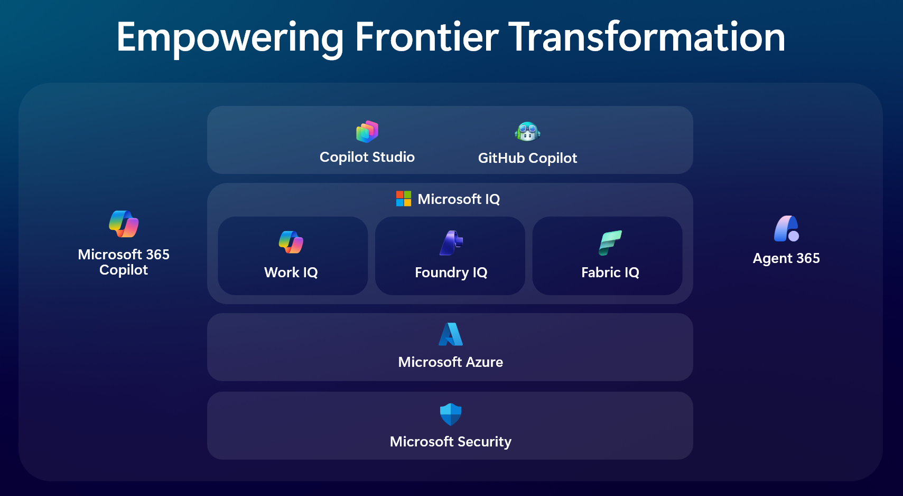

Personal Learning Library
A living collection of hands-on technical manuals on the Microsoft platform — practical, beginner-friendly, and built to get you productive fast.

AI woven into Word, Excel, PowerPoint, Outlook & Teams, grounded in your work data.
Low-code platform to build, publish and govern your own AI agents.
AI pair programmer, from inline completions to autonomous agent mode.
The control plane to register, govern and secure every AI agent.
The intelligence layer that grounds agents in a complete view of your organization.
Workplace intelligence over how your organization actually works.
Knowledge layer that grounds Foundry agents in your policies & documents.
Semantic layer that models your business entities over OneLake & Power BI.